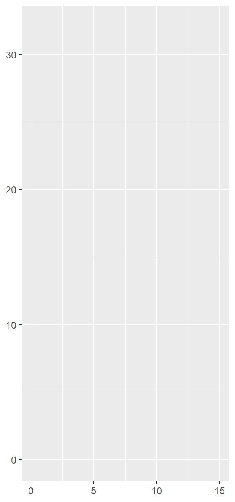
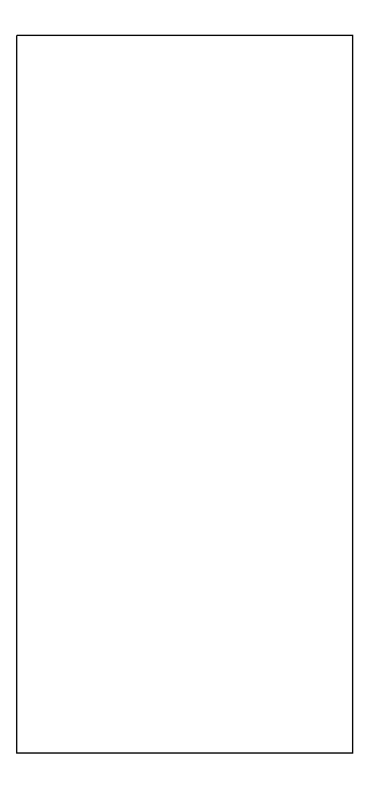
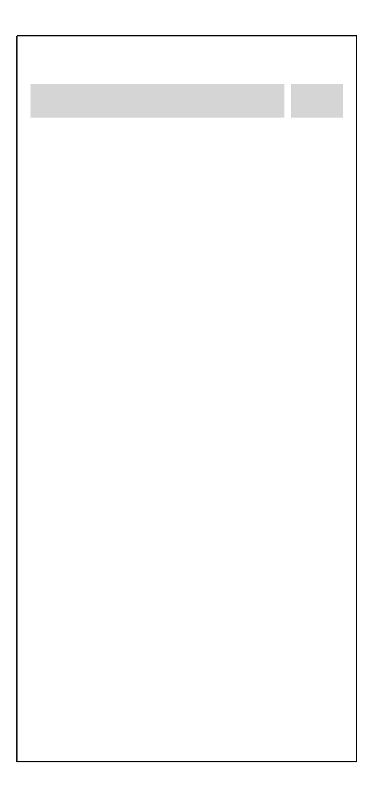
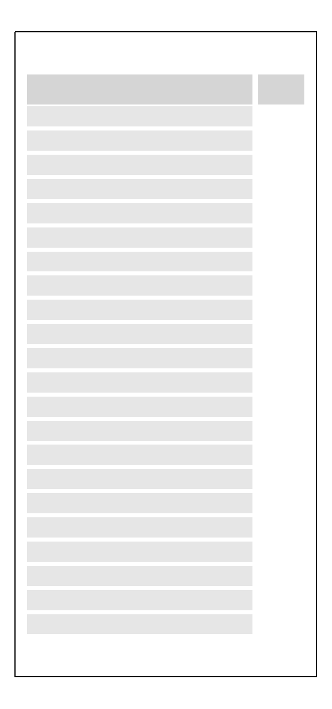
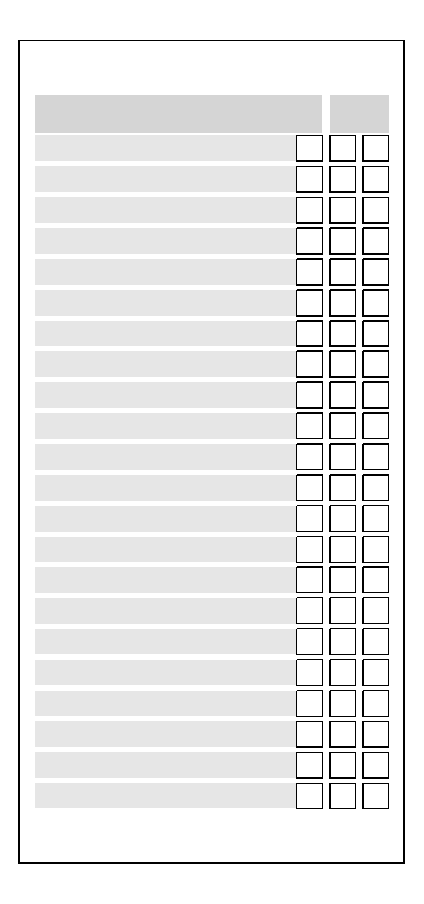

library(tidyverse)Cédula Elecciones 2020 usando ggplot2 (parte 1)
Código y explicación para generar una cédula de elecciones congresales - Diseño
No tengo conocimiento sobre el software que ha utilizado ONPE para diseñar la cédula que se utilizará en nuestras elecciones congresales, pero es posible intentar replicarla en R, usando funciones de la colección de paquetes del tidyverse.
Para ello, primero cargamos los paquetes. Omitiré aquí los mensajes y warnings que aparecerán en una sesión normal. Además, en general utilizaré una línea por cada parámetro en las funciones que utilice, de modo que sea fácil de visualizar el código en teléfonos móviles.
El siguiente paso será crear una superficie en la que irá el gráfico. Usaremos las funciones de ggplot2 para esto y para todas las futuras personalizaciones. Utilizaremos un ancho de 15 unidades (eje x) y un alto de 32 unidades (eje y) para mantener las proporciones definidas por la ONPE en la RESOLUCIÓN JEFATURAL Nº 000263-2019-JN/ONPE.
cedula <- ggplot()+
# límites del plano
xlim(c(0, 15))+
ylim(c(0, 32))
cedula
Debido a que las líneas divisorias y el fondo no nos ayudan para nuestros propósitos, nos vamos a deshacer de ellos usando theme_void(). Para mantener la referencia de los límites del gráfico, crearemos un marco con borde negro utilizando geom_rect().
cedula <- cedula +
theme_void() +
# marco rectangular con borde negro
geom_rect(aes(xmin = 0,
xmax = 15,
ymin = 0,
ymax = 32),
color = "black",
alpha = 0)
cedula
Lo siguiente es establecer el espacio que ocuparán los elementos de la cédula. En este caso, podemos llamar instrucciones a los marcos de texto que contienen las instrucciones de cómo votar. Los nombres de las columnas del tibble instrucciones nos permitirán identificarlos con los parámetros de geom_rect() cuando lo agreguemos al gráfico.
instrucciones <- tribble(
~xmin, ~xmax, ~ymin, ~ymax,
0.6, 11.8, 28.4, 29.9,
12.1, 14.4, 28.4, 29.9)
cedula <- cedula +
# contenedores debajo del título con instruciones
geom_rect(data = instrucciones,
aes(xmin = xmin,
xmax = xmax,
ymin = ymin,
ymax = ymax),
alpha = 0.25)
cedula
Llamaremosrectangulos a los marcos en los que van contenidos los nombres de las agrupaciones políticas. Debido a que son varios contenedores y la distancia entre ellos es uniforme, crearemos los valores del eje Y usando un generador de secuencias. Los valores del eje X, en cambio, son constantes.
rectangulos <- tibble(xmin = 0.6,
xmax = 11.8,
ymin= seq(
from = 27.3,
to = 2.1,
by = -1.2),
ymax = ymin + 1)
cedula <- cedula +
# rectángulos para nombres de partidos
geom_rect(data = rectangulos,
aes(xmin = xmin,
xmax = xmax,
ymin = ymin,
ymax = ymax),
alpha = 0.15)
cedula
El tibble preferencial contiene los cuadrados en los que el votante puede marcar el logo de la agrupación política de su preferencia. Modificando un poco su ubicación el eje X en dos ocasiones, permitirá tener también los cuadrados de voto preferencial.
preferencial <- tibble(
xmin = 10.8,
xmax = 11.8,
ymin= seq(
from = 27.3,
to = 2.1,
by = -1.2),
ymax = ymin + 1)
cedula <- cedula +
# cuadrados para logo
geom_rect(data = preferencial,
aes(xmin = xmin,
xmax = xmax,
ymin = ymin,
ymax = ymax),
color = "black",
fill = "white") +
# cuadrado para voto preferencial 1
geom_rect(data = preferencial,
aes(xmin = xmin + 1.3,
xmax = xmax + 1.3,
ymin = ymin,
ymax = ymax),
color = "black",
fill = "white") +
# cuadrado para voto preferencial 1
geom_rect(data = preferencial,
aes(xmin = xmin + 2.6,
xmax = xmax + 2.6,
ymin = ymin,
ymax = ymax),
color = "black",
fill = "white")
cedula
En la segunda parte del post explicaré cómo agregar el texto, tanto de los nombres de los partidos políticos como de las instrucciones para votar.